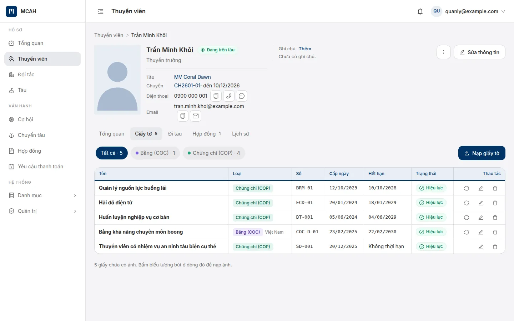

Giấy tờ và AI đọc giấy
Nạp giấy tờ, để AI điền sẵn, kiểm tra rồi lưu.
Tab Giấy tờ của hồ sơ gom mọi giấy của thuyền viên vào một bảng: tên, loại, số, ngày cấp, ngày hết hạn, trạng thái. Chip lọc theo nhóm: Tuỳ thân, Bằng (COC), Chứng chỉ (COP), Y tế, Khác. Nút tải cả bộ cho ra một file .zip.

Nạp giấy tờ bằng AI
- Bấm Nạp giấy tờ, chọn ảnh chụp hoặc file PDF của giấy.
- AI đọc ngay khi chọn tệp và điền sẵn các ô: loại giấy, số, ngày cấp, ngày hết hạn, nơi cấp.
- Kiểm tra từng ô so với bản gốc, sửa nếu cần. Với giấy tuỳ thân (CCCD, hộ chiếu, sổ thuyền viên), app hiện các ô hồ sơ sẽ đổi (cũ → mới) để bạn chọn ô nào cập nhật.
- Bấm lưu. Giấy vào bảng, ảnh gốc lưu kèm.
Ô không đọc được thì để trống, AI không đoán. Ảnh quá mờ thì nhập tay. Nếu máy chủ chưa cấu hình AI, tệp vẫn được lưu kèm hồ sơ và app báo "AI chưa được cấu hình"; các phần khác dùng bình thường.
Nạp bản mới của một giấy tạo dòng mới, dòng cũ chuyển thành "Bản cũ". Xoá giấy là xoá mềm: tệp còn giữ 180 ngày rồi mới bị dọn khỏi ổ đĩa.
Nhắc giấy sắp hết hạn
Giấy tờ, chứng chỉ, hợp đồng sắp hết hạn được báo bằng thông báo của máy (góc màn hình), kể cả khi cửa sổ Catoro đang thu nhỏ. Bấm vào thông báo để mở đúng hồ sơ. Máy tắt qua đêm thì sáng mở app, Catoro tự kiểm và báo bù.